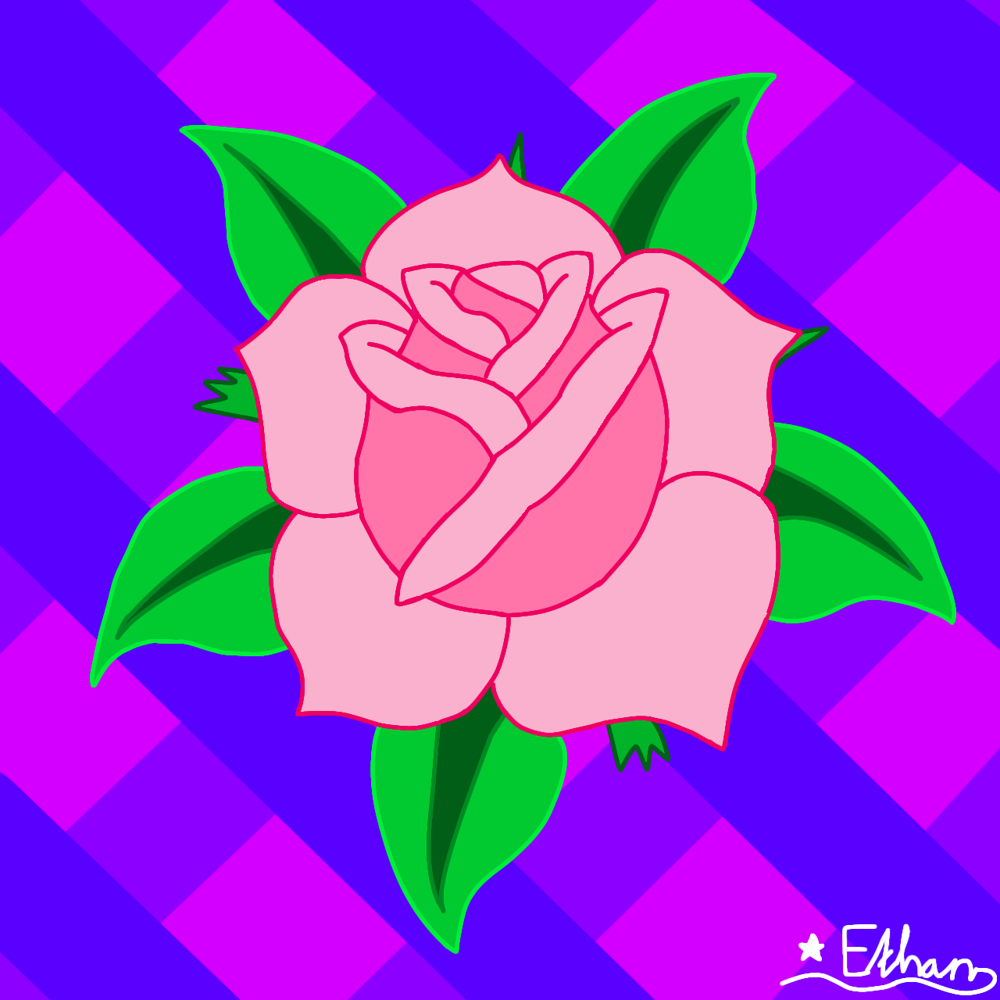
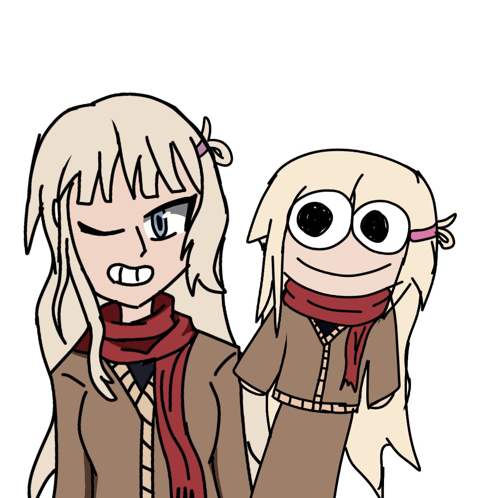
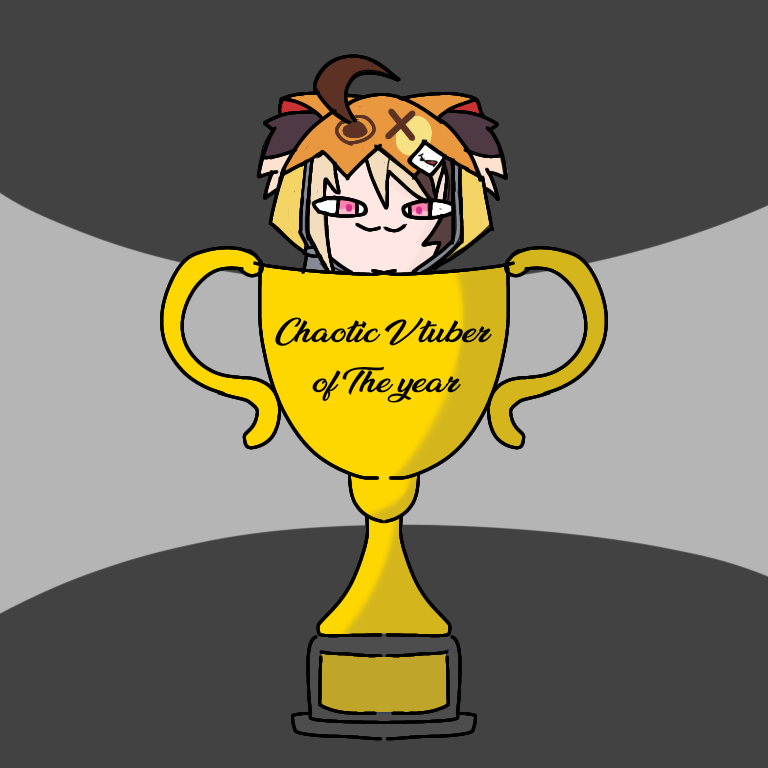
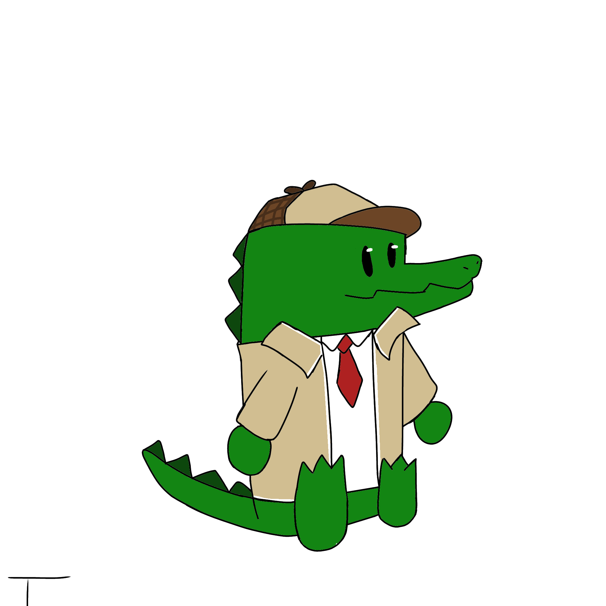
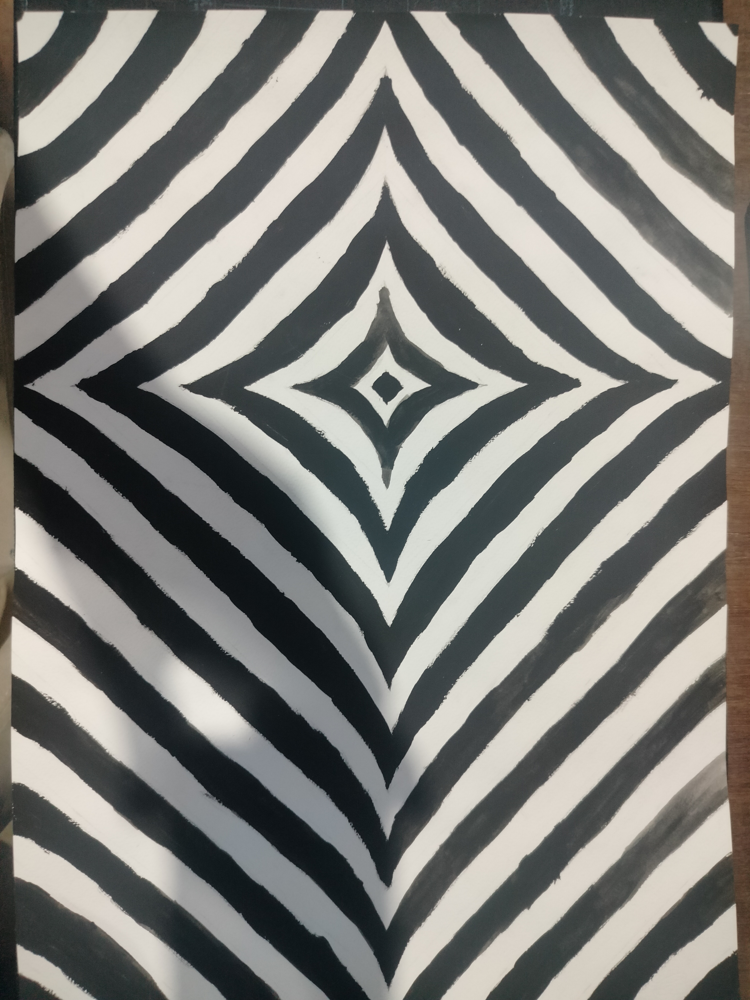
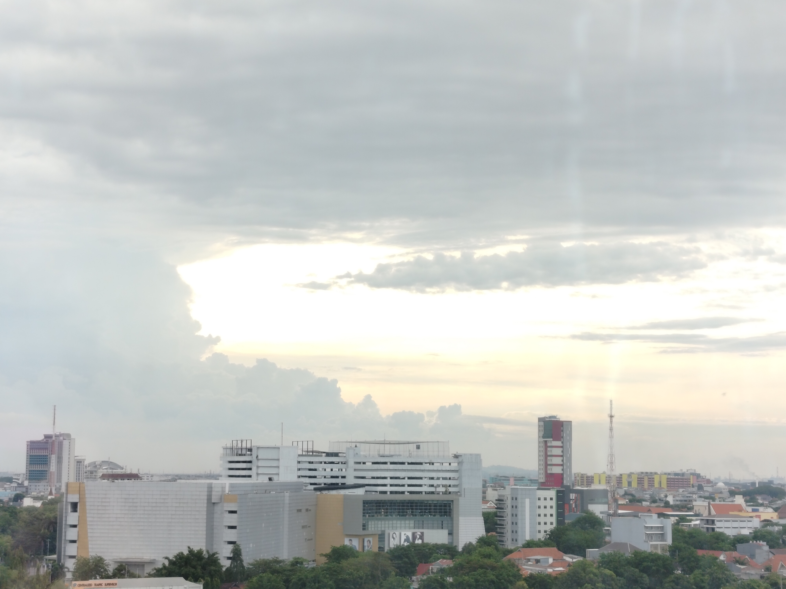
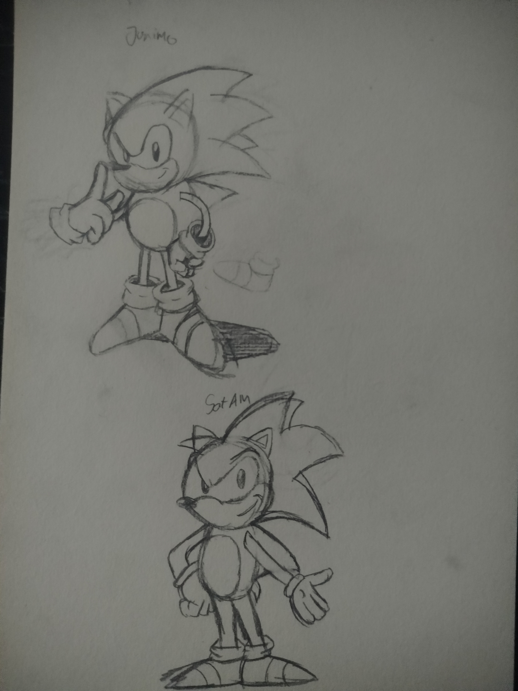
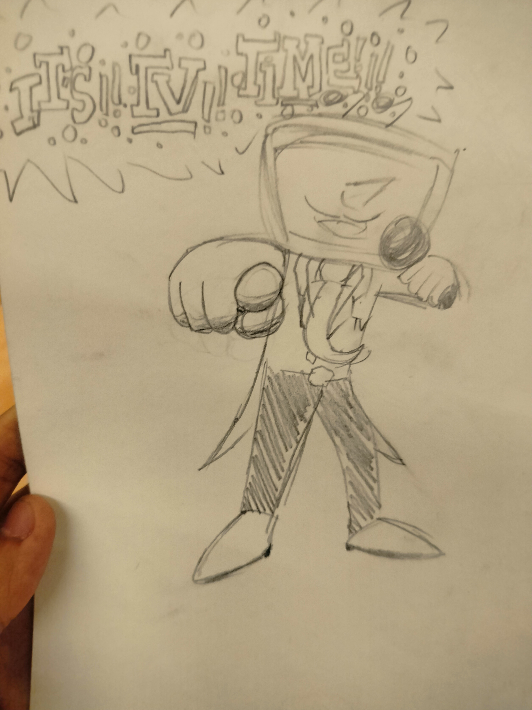
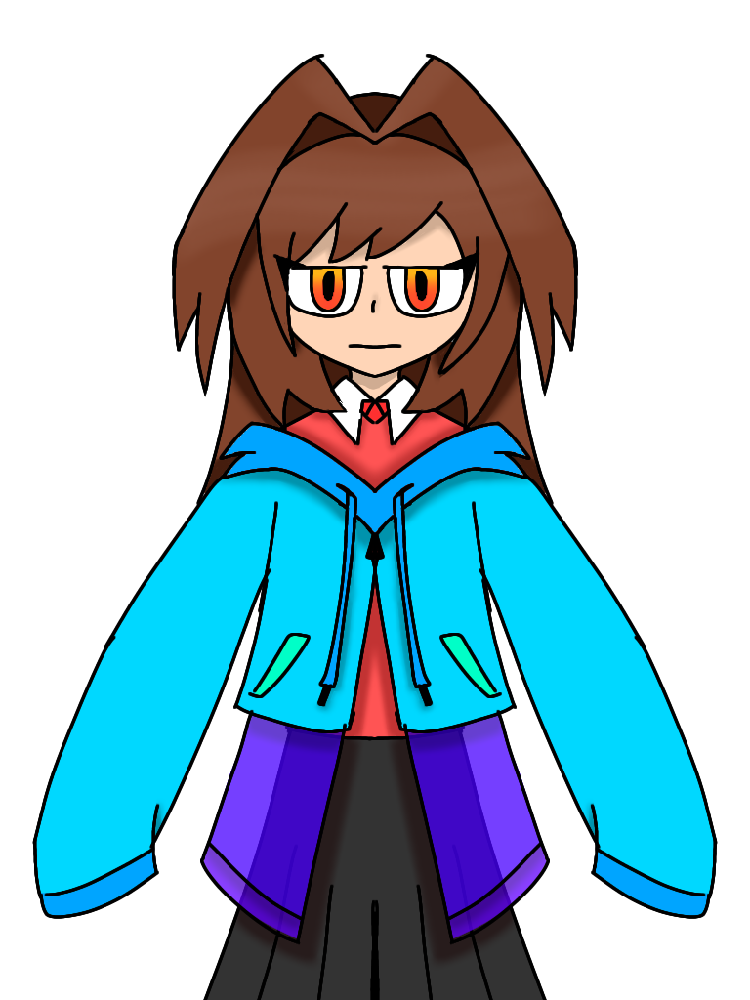

gamabr Bunga yang dibuat untuk DeviantArt Tutorial Rose (23 Agustus 2022)

gambar sketsa alternative 2 pada storytelling, sketsa tradisional a4

gambar primal dialga yang dibuat di Infinite Paint pada 15 november 2025

gamabr oc teman sma yanng dibikinn untuk hari uang tahun mereka, gambar iin dibuat di Ibist Paint pada 17 oktober 2024

gamabar/fanart Amelia Watson dari Hololive English digambar pada 17 september 2025

gamabar oc teman sma yang digambar pertama diluar sma digambar pada 20 januari 20265

gamabar oc diri sendiri digambar saat fase half-life/portal/valve superfan pada 12 september 2022

gamabar cover sonic issue 253 dari archie comics

gamabran saat fase obsesi dengan hl2 beta tentang hl2 beta city 17 secara specific gambar manhack arcade dengan citadel di background

gamabar/asset video yang digunakan pada sejara seni rupa dibuat pada 29 maret 2026

gamabar/fanart dari oc teman sma, ini adalah gambar pertama dari karakter ini, digambar pada 5 september 2024

karya 3d terinspirasi dari G Tower di hermitcraft, gambar diambil pada 2 desember 2025

gamabar/fanart dari desain maskot dari kamen rider geats pada film crossover dengan gotchard gamabar dibuat pada 2 november 2026

gamabar/fanart dari GiGi Murin dari Hololive Justice, gambar dibuat pada 16 desember 2024

gamabar/asset video pertama untuk pelajaran sejara seni rupa dibuat pada 23 febuari 2026

gamabar yang dibuat hanya untuk profile picture, dibuat pada 12 januari 2023

gamabar/karya yang dibuat hanya menggunakan cat hitam yang gambarnya diambil pada 1 september 2025

sebuah foto yang diambil di kamar rumah sakit husada utama diambil pada 10 september 2025

gamabar dari cerita 1 pada tugas 1 storytelling digambar pada 1 oktober 2026

gamabar/fanart dari suasana pada game pokemon mystery dungeon explorer of sky, foto diambil pada 10 november 2025

gamabar/fanart dari video WOTFI 2024 dari SMG4, dibuat pada 23 agustus 2022

gamabar/fanart dari mario & sonic, dibuat pada 5 mei 2026

gamabar/fanart dari junimo sonic (atas) dengan SatAM sonic (bawah) dibuat pada 2 april 2026

gamabar/fanart dari Ant Tenna dari deltarune, dibuat pada 28 oktober 2025

gamabar dari oc diri sendiri, digambar pada fase obsesi dengan super sentai dan kereta api, digambar pada 22 november 2022

gamabar dari tempat pada dlc video game Fallout: New Vegas (Lonesome Road) foto gambar diambil pada 10 november 2025

gamabar dari oc diri sendiri, digambar untuk uji coba manggambar karakter perempuan, dibuat pada 23 december 2024

gamabar karakter yang dibuat karena kesukaan burung hantu dan sebagai deain akrilik figurine, dibuat pada 26 mei 2060

gamabar untuk desain sticker dibuat pada 7 mei 2026

gamabar terakir dari sma yang digambar secara tradisional, dan di frame, lokasi gambar terakir diketahui saat di beli frater kepala sekolah, foto diambil pada 6 febuari 2025